Step 1:
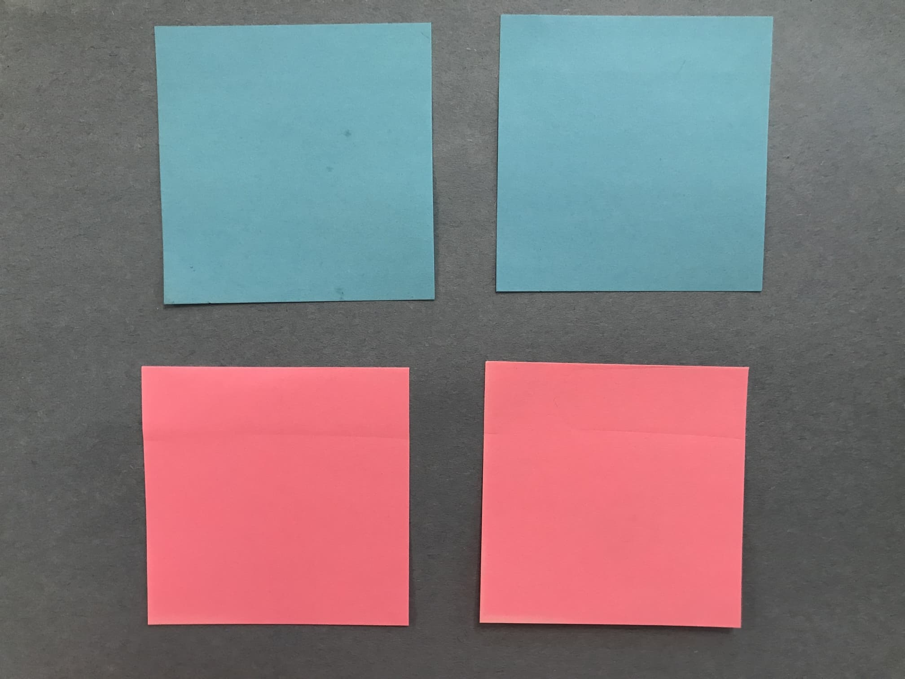Peel off 8 sticky notes. Use instead of fourths of origami paper. I suggest 4 of one color and 4 of another color, so that they alternate (like in the Fun Project example).
Step 1:
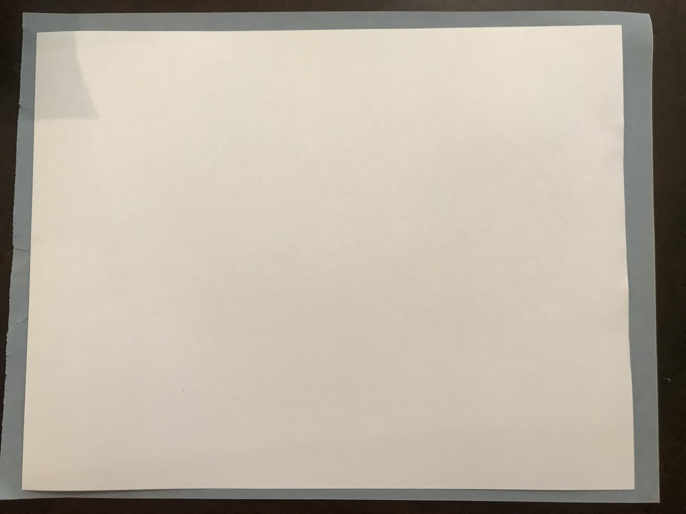Take a piece of normal paper (you’ll need 2). I suggest colored paper, but construction paper will be hard to work with.
Step 2:
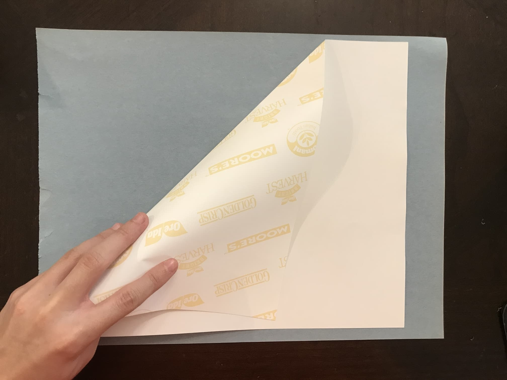Fold a corner down to the side like so. Match up the edge!
Step 3
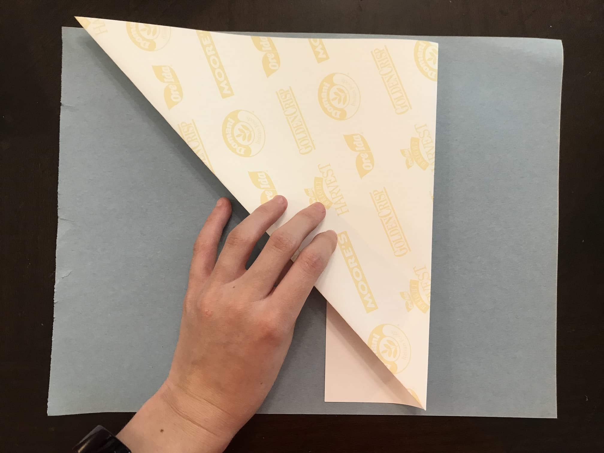Fold along the bottom edge of the triangle.
Step 4
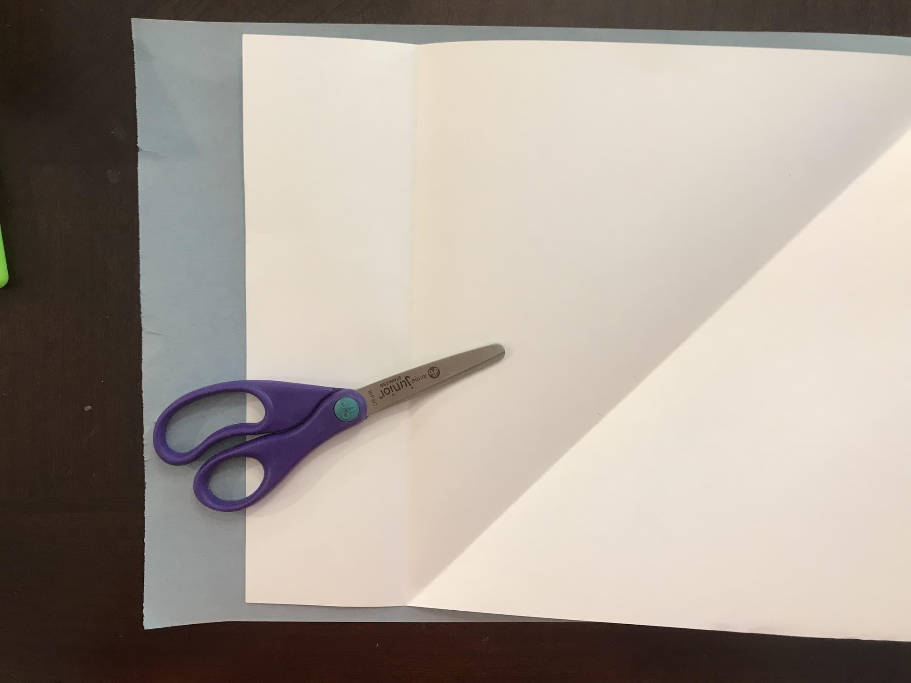Unfold. Cut along Step 3 fold line.
Step 5
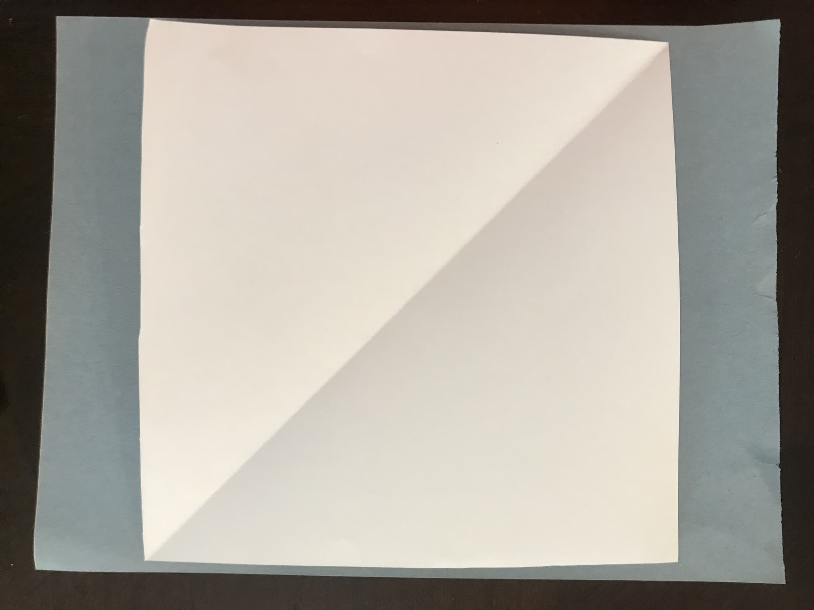Use instead of origami paper.
Step 1:
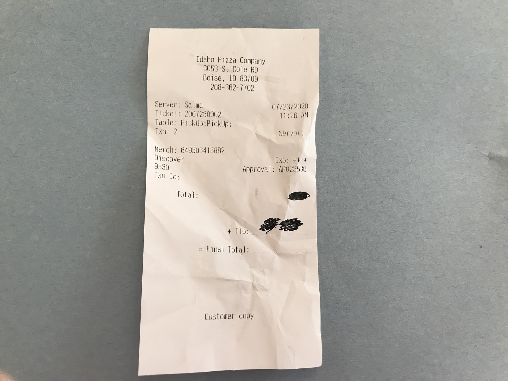Take an old receipt. i suggest that you don't use too small of a receipt, and be aware of extra creases in the receipts that could hinder you.
Step 2:
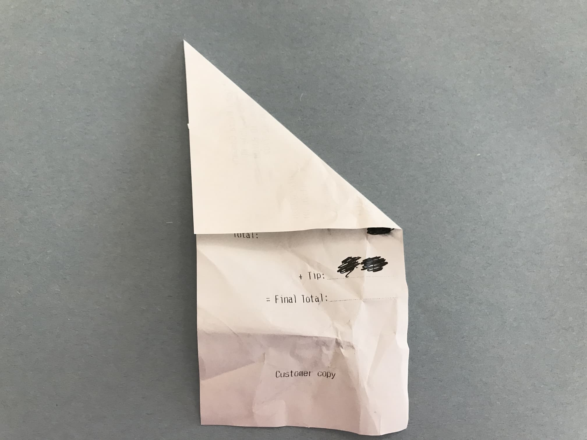Fold a corner down to the side like so. Match up the edge!
Step 3:
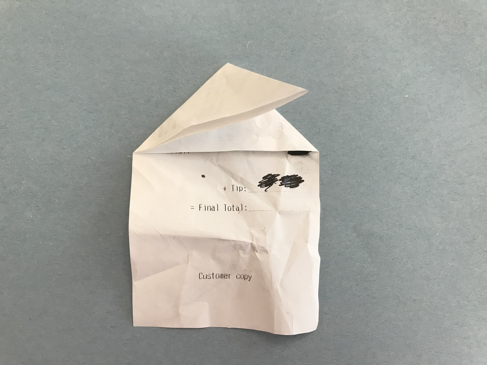You can fold the other corner over before folding if you wish.
Step 4:
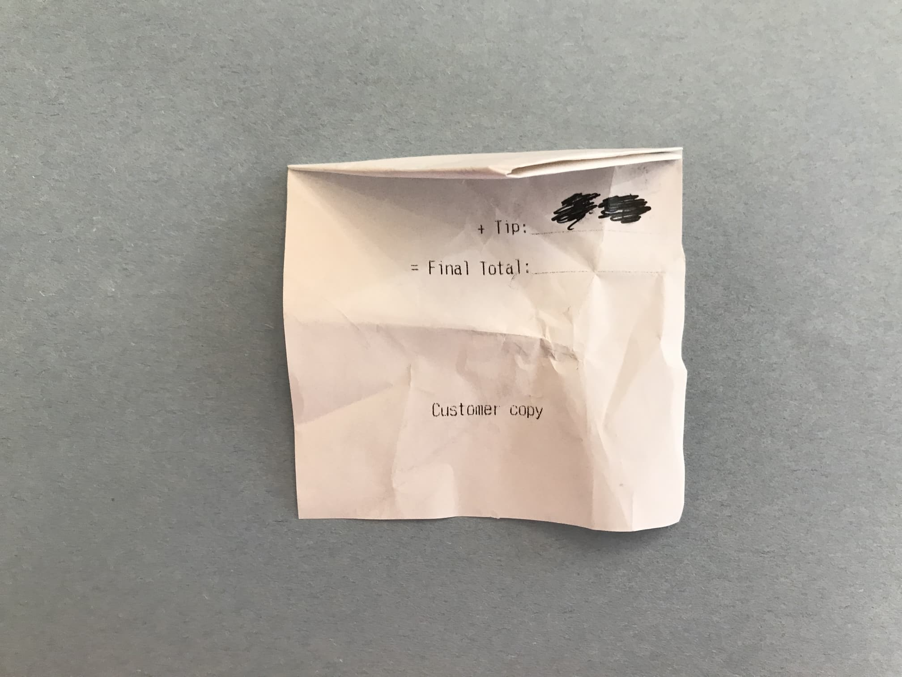Fold along the bottom edge of the triangle.
Step 5:
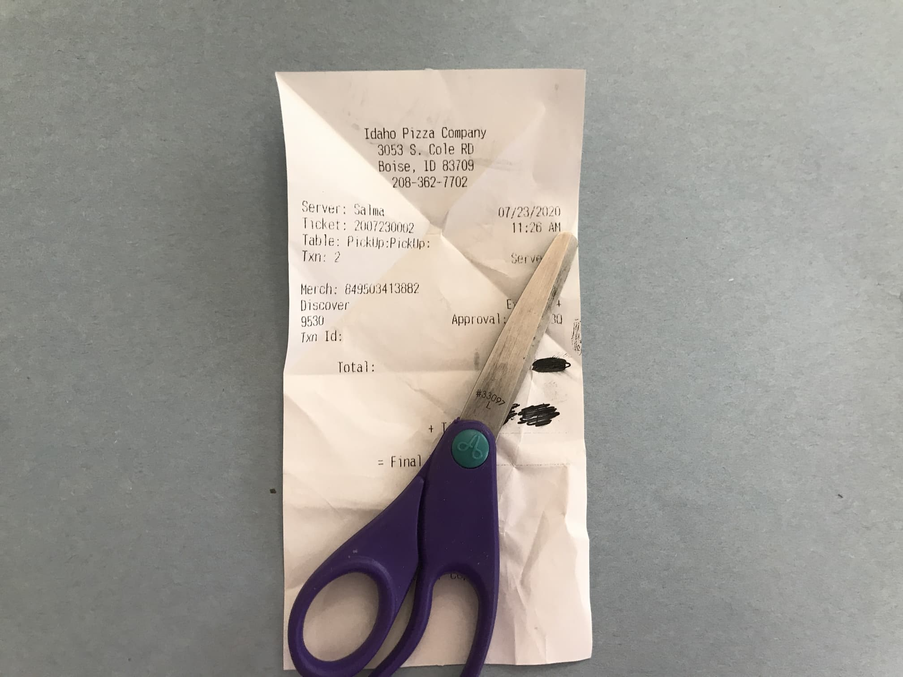Unfold. Cut along Step 4 fold line.
Step 6:
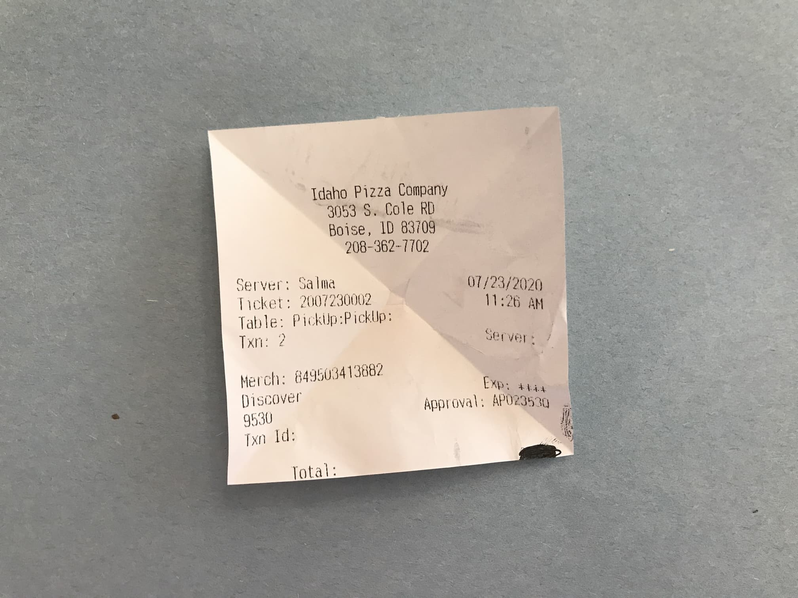Make 8 squares, using as many receipts as needed. Use instead of fourths of origami paper.